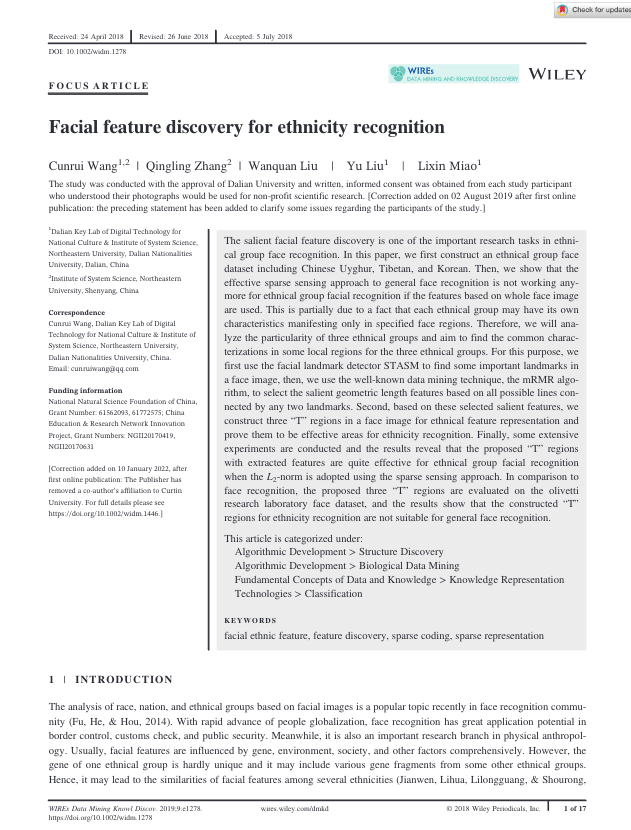
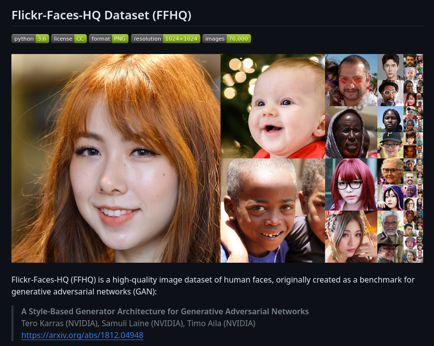
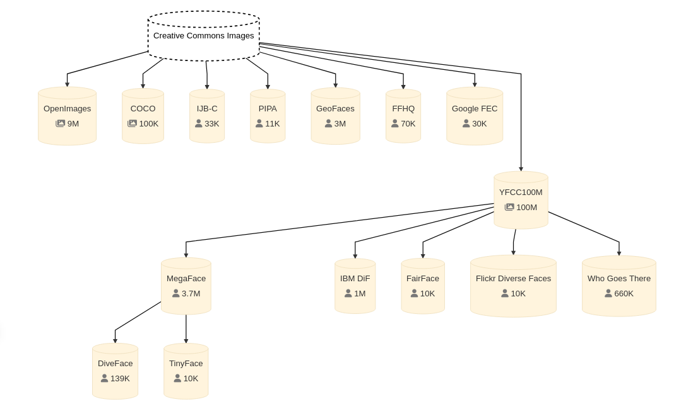
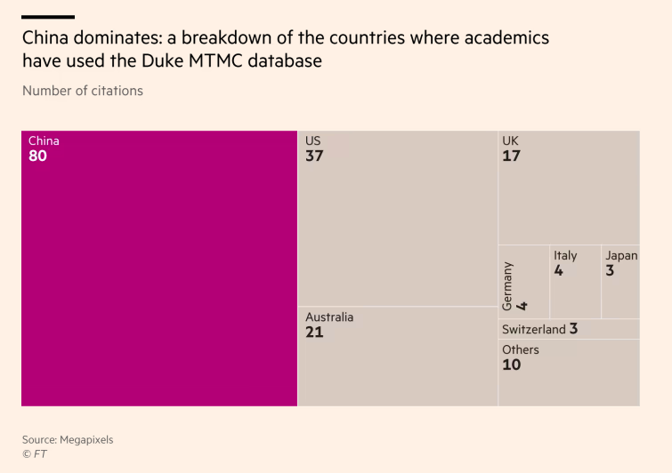
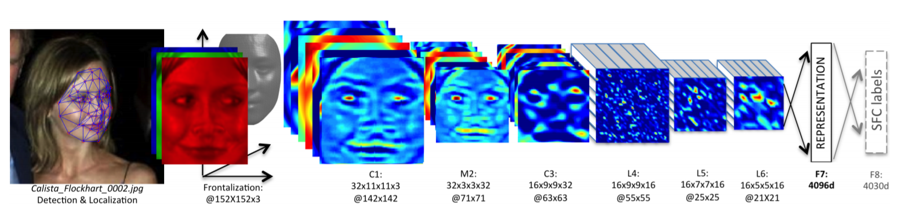
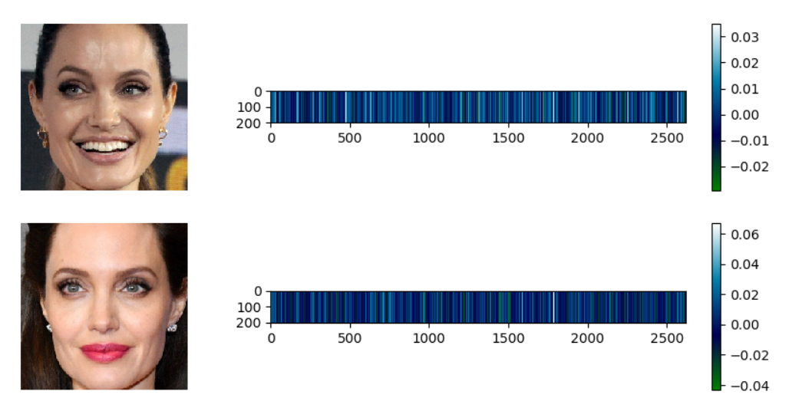
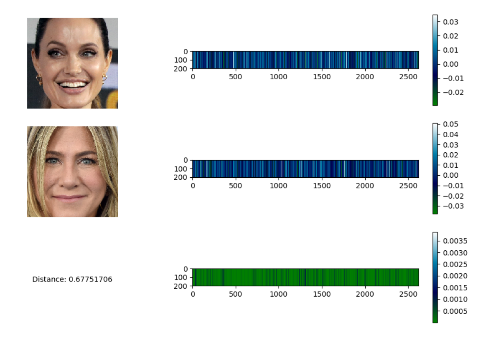
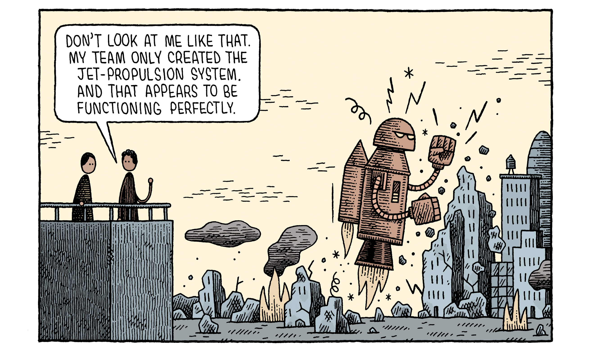
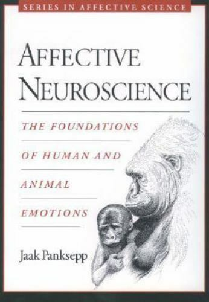

<!DOCTYPE html>
<html lang="en">
  <head>
    <meta charset="utf-8" />
    <meta name="viewport" content="width=device-width, initial-scale=1.0, maximum-scale=1.0, user-scalable=no" />

    <title>Faces and Identities</title>
    <link rel="stylesheet" href="dist/reveal.css" />
    <link rel="stylesheet" href="dist/theme/black.css" id="theme" />
    <link rel="stylesheet" href="plugin/highlight/zenburn.css" />
	<link rel="stylesheet" href="css/layout.css" />
	<link rel="stylesheet" href="plugin/customcontrols/style.css">
	<link rel="stylesheet" href="plugin/chalkboard/style.css">

	<link rel="stylesheet" href="plugin/reveal-pointer/pointer.css" />


    <script defer src="dist/fontawesome/all.min.js"></script>

	<script type="text/javascript">
		var forgetPop = true;
		function onPopState(event) {
			if(forgetPop){
				forgetPop = false;
			} else {
				parent.postMessage(event.target.location.href, "app://obsidian.md");
			}
        }
		window.onpopstate = onPopState;
		window.onmessage = event => {
			if(event.data == "reload"){
				window.document.location.reload();
			}
			forgetPop = true;
		}

		function fitElements(){
			const itemsToFit = document.getElementsByClassName('fitText');
			for (const item in itemsToFit) {
				if (Object.hasOwnProperty.call(itemsToFit, item)) {
					var element = itemsToFit[item];
					fitElement(element,1, 1000);
					element.classList.remove('fitText');
				}
			}
		}

		function fitElement(element, start, end){

			let size = (end + start) / 2;
			element.style.fontSize = `${size}px`;

			if(Math.abs(start - end) < 1){
				while(element.scrollHeight > element.offsetHeight){
					size--;
					element.style.fontSize = `${size}px`;
				}
				return;
			}

			if(element.scrollHeight > element.offsetHeight){
				fitElement(element, start, size);
			} else {
				fitElement(element, size, end);
			}		
		}


		document.onreadystatechange = () => {
			fitElements();
			if (document.readyState === 'complete') {
				if (window.location.href.indexOf("?export") != -1){
					parent.postMessage(event.target.location.href, "app://obsidian.md");
				}
				if (window.location.href.indexOf("print-pdf") != -1){
					let stateCheck = setInterval(() => {
						clearInterval(stateCheck);
						window.print();
					}, 250);
				}
			}
	};


        </script>
  </head>
  <body>
    <div class="reveal">
      <div class="slides"><section  data-markdown><script type="text/template"><!-- .slide: class="drop" -->
<div class="" style="position: absolute; left: 0px; top: 0px; height: 1200px; width: 1920px; min-height: 1200px; display: flex; flex-direction: column; align-items: center; justify-content: center" absolute="true">

# Faces and identities
## AI & Society ― week 8


[Dr Daniel Chávez Heras](https://movingpixel.net/)

[6AAVC307](https://keats.kcl.ac.uk/course/view.php?id=110858) | [7AAVCD42](https://keats.kcl.ac.uk/course/view.php?id=108767)

2023-24
</div>

<aside class="notes"><p>This week we focus on faces and identity. We survey contemporary technologies for face detection and recognition, including some of its most controversial applications and implications in society. We consider why faces are an especial kind of input map, and how their encoding is deeply linked to identity and to troubling legacies of racism and eugenics.</p>
</aside></script></section><section  data-markdown><script type="text/template"><!-- .slide: class="drop" -->
<div class="" style="position: absolute; left: 0px; top: 0px; height: 1200px; width: 1920px; min-height: 1200px; display: flex; flex-direction: column; align-items: center; justify-content: center" absolute="true">

# Your face

<i class="fas fa-meh-blank fa-4x" ></i>
</div>

<aside class="notes"><p>Start with a show of hands:
how many people have taken a selfie?
How many have posted it online?
How many unlock their phones with their face?</p>
</aside></script></section><section  data-markdown><script type="text/template"><!-- .slide: class="has-dark-background drop" data-background-color="#2b1804" -->
<div class="" style="position: absolute; left: 0px; top: 0px; height: 1200px; width: 1920px; min-height: 1200px; display: flex; flex-direction: column; align-items: center; justify-content: center" absolute="true">

# The road ahead
<div class="callout callout-color8">
<div class="callout-title">
<div class="callout-icon">

<i class="fas fa-list" ></i>


</div>
<div class="callout-title-inner">

In today's lecture:  

</div>
</div>
<div class="callout-content">

1. Questionable applications

2. Questionable ethics

3. Questionable engineering

4. Science and pseudoscience of faces

5. Questions

</div>
</div>
</div></script></section><section  data-markdown><script type="text/template"><!-- .slide: class="has-dark-background drop" data-background-color="#304f5e" -->
<div class="" style="position: absolute; left: 0px; top: 0px; height: 1200px; width: 1920px; min-height: 1200px; display: flex; flex-direction: column; align-items: center; justify-content: center" absolute="true">

# 1. Questionable applications
## Uses and misuses of facial recognition

<i class="fas fa-surprise fa-4x" ></i>
</div></script></section><section  data-markdown><script type="text/template"><!-- .slide: class="drop" -->
<div class="" style="position: absolute; left: 0px; top: 0px; height: 1200px; width: 1920px; min-height: 1200px; display: flex; flex-direction: column; align-items: center; justify-content: center" absolute="true">

<split even gap=2>
<ul> <h2>Desirable</h2> <li>Looking for missing people <li>Tracking criminals <li>Interaction with robots <li> Assist medical diagnosis</ul>

<ul><h2>Undesirable</h2><li>Behavioural prediction <li>Racial/ethnic profiling <li>Sexual identity <li>Predictive policing <li>Identity theft</ul>
</split>

...


## Is this the whole story?
https://exposing.ai/
</div>

<aside class="notes"><p>some of the same kinds of systems can be used for security and with criminal intent</p>
</aside></script></section><section  data-markdown><script type="text/template"><!-- .slide: class="drop" -->
<div class="" style="position: absolute; left: 0px; top: 0px; height: 1200px; width: 1920px; min-height: 1200px; display: flex; flex-direction: column; align-items: center; justify-content: center" absolute="true">

<split even gap=3>



	


</split>
</div>

<aside class="notes"><p>Wang, C., Zhang, Q., Liu, W., Liu, Y. &amp; Miao, L. <em>Wiley Interdiscip. Rev. Data Min. Knowl. Discov.</em> <strong>9</strong>, e1278 (2019).</p>
<p>Ristani, E., Solera, F., Zou, R. S., Cucchiara, R. &amp; Tomasi, C. Preprint at <a href="https://arxiv.org/abs/1609.01775">https://arxiv.org/abs/1609.01775</a> (2016).</p>
</aside></script></section><section  data-markdown><script type="text/template"><!-- .slide: class="has-dark-background drop" data-background-color="#304f5e" -->
<div class="" style="position: absolute; left: 0px; top: 0px; height: 1200px; width: 1920px; min-height: 1200px; display: flex; flex-direction: column; align-items: center; justify-content: center" absolute="true">

# 2. Questionable ethics
## Impossible consent

<i class="fas fa-frown-open fa-4x" ></i>
</div></script></section><section  data-markdown><script type="text/template"><!-- .slide: class="drop" -->
<div class="" style="position: absolute; left: 0px; top: 0px; height: 1200px; width: 1920px; min-height: 1200px; display: flex; flex-direction: column; align-items: center; justify-content: center" absolute="true">


</div>

<aside class="notes"><p>Made by NVIDIA (USD 1T company)</p>
<ul>
<li>70,000 total face images from </li>
<li>67,646 unique Flickr photos</li>
<li>Many children</li>
<li>Opt-out system, but never opted in</li>
</ul>
</aside></script></section><section  data-markdown><script type="text/template"><!-- .slide: class="drop" -->
<div class="" style="position: absolute; left: 0px; top: 0px; height: 1200px; width: 1920px; min-height: 1200px; display: flex; flex-direction: column; align-items: center; justify-content: center" absolute="true">


>You can check out any time you like
>But you can never leave

\- The Eagles
</div></script></section><section  data-markdown><script type="text/template"><!-- .slide: class="drop" -->
<div class="" style="position: absolute; left: 0px; top: 0px; height: 1200px; width: 1920px; min-height: 1200px; display: flex; flex-direction: column; align-items: center; justify-content: center" absolute="true">

## Zombie data

>When images are removed, hidden, or made private on Flickr they still persist in the FFHQ dataset.


...

## Rogue data
>Created for generative AI, but used for face recognition

...


## Derivatives
>Enriching face data with other sources of biometric data
</div>

<aside class="notes"><ul>
<li>over 10% of the FFHQ dataset has been removed from or made private on Flickr yet continues to persist in the FFHQ dataset.</li>
<li>over <a href="https://scholar.google.com/scholar?hl=de&amp;as_sdt=0%2C5&amp;q=ffhq+dataset&amp;btnG=&amp;oq=ffhq+da">2,600 research papers</a> listed that use or reference the dataset</li>
<li>It is the data driving projects including <a href="https://www.semanticscholar.org/paper/Soft-Biometrics-and-Deep-Learning%3A-Detecting-Facial-Banati-Prakash/1c4ee4db067e92f8776c0fb6cd4de0766cd606d7">soft biometrics and forehead analysis</a>, <a href="https://www.semanticscholar.org/paper/Masked-Face-Classification-using-Convolutional-Kitchat-Pura/dde8743a666d15e27cc8f0261d79ee38abc771e4">masked face classification/recognition</a>, and &quot;<a href="https://www.semanticscholar.org/paper/Real-world-human-gender-classification-from-oral-Oulad-Kaddour-Haddadou/9a1e2be7d6bce3fd5409abd8c41ec55af153f3f7">real-world human gender classification from oral region</a>&quot; to name only a few.
gender: &quot;gender attributes, a category of information that has repeatedly been labeled as outdated, unacceptable, and easily abused.&quot;&quot;</li>
</ul>
</aside></script></section><section  data-markdown><script type="text/template"><!-- .slide: class="drop" -->
<div class="" style="position: absolute; left: 0px; top: 0px; height: 1200px; width: 1920px; min-height: 1200px; display: flex; flex-direction: column; align-items: center; justify-content: center" absolute="true">




https://adam.harvey.studio/creative-commons/
</div></script></section><section  data-markdown><script type="text/template"><!-- .slide: class="drop" -->
<div class="" style="position: absolute; left: 0px; top: 0px; height: 1200px; width: 1920px; min-height: 1200px; display: flex; flex-direction: column; align-items: center; justify-content: center" absolute="true">




Source: [Who’s using your face? The ugly truth about facial recognition](https://www.ft.com/content/cf19b956-60a2-11e9-b285-3acd5d43599e)
</div>

<aside class="notes"><p><a href="https://exposing.ai/duke_mtmc/">https://exposing.ai/duke_mtmc/</a></p>
</aside></script></section><section  data-markdown><script type="text/template"><!-- .slide: class="drop" -->
<div class="" style="position: absolute; left: 0px; top: 0px; height: 1200px; width: 1920px; min-height: 1200px; display: flex; flex-direction: column; align-items: center; justify-content: center" absolute="true">

## Information supply chains


</div>

<aside class="notes"><p>&quot;To help understand how Duke MTMC Dataset has been used around the world by commercial, military, and academic organizations; existing publicly available research citing Duke Multi-Target, Multi-Camera Tracking Project was collected, verified, and geocoded to show how AI training data has proliferated around the world. Click on the markers to reveal research projects at that location.&quot;</p>
</aside></script></section><section  data-markdown><script type="text/template"><!-- .slide: class="has-dark-background drop" data-background-color="#304f5e" -->
<div class="" style="position: absolute; left: 0px; top: 0px; height: 1200px; width: 1920px; min-height: 1200px; display: flex; flex-direction: column; align-items: center; justify-content: center" absolute="true">

# 3. Questionable engineering
## Faces as barcodes

<i class="fas fa-tired fa-4x" ></i>
</div></script></section><section  data-markdown><script type="text/template"><!-- .slide: class="drop" -->
<div class="" style="position: absolute; left: 0px; top: 0px; height: 1200px; width: 1920px; min-height: 1200px; display: flex; flex-direction: column; align-items: center; justify-content: center" absolute="true">

## How does face recognition work?

1. Detection (determine a region of an image is a face)
2. Alignment (align facial features)
3. [Normalisation](https://youtu.be/kJDFWyyfarE?si=RilGlGFbuUvmOi7G) (plot face landmarks in squared areas)
4. Representation (extract face features as vectors)
5. Verification (calculate the distance between vectors)
</div></script></section><section  data-markdown><script type="text/template"><!-- .slide: class="drop" -->
<div class="" style="position: absolute; left: 0px; top: 0px; height: 1200px; width: 1920px; min-height: 1200px; display: flex; flex-direction: column; align-items: center; justify-content: center" absolute="true">




Facebook DeepFace architecture
</div></script></section><section  data-markdown><script type="text/template"><!-- .slide: class="drop" -->
<div class="" style="position: absolute; left: 0px; top: 0px; height: 1200px; width: 1920px; min-height: 1200px; display: flex; flex-direction: column; align-items: center; justify-content: center" absolute="true">


</div>

<aside class="notes"><p>VGG-Face representation has 2622 slots horizontally. Each slot is represented with different color and color meaning explained in the colorbar on the right.</p>
</aside></script></section><section  data-markdown><script type="text/template"><!-- .slide: class="drop" -->
<div class="" style="position: absolute; left: 0px; top: 0px; height: 1200px; width: 1920px; min-height: 1200px; display: flex; flex-direction: column; align-items: center; justify-content: center" absolute="true">


</div>

<aside class="notes"><p>false positive example</p>
</aside></script></section><section  data-markdown><script type="text/template"><!-- .slide: class="drop" -->
<div class="" style="position: absolute; left: 0px; top: 0px; height: 1200px; width: 1920px; min-height: 1200px; display: flex; flex-direction: column; align-items: center; justify-content: center" absolute="true">


</div></script></section><section  data-markdown><script type="text/template"><!-- .slide: class="drop" -->
<div class="" style="position: absolute; left: 0px; top: 0px; height: 1200px; width: 1920px; min-height: 1200px; display: flex; flex-direction: column; align-items: center; justify-content: center" absolute="true">

# 4. Science and pseudo science
## understanding difference

<i class="fas fa-angry fa-4x" ></i>
</div></script></section><section  data-markdown><script type="text/template"><!-- .slide: class="drop" -->
<div class="" style="position: absolute; left: 0px; top: 0px; height: 1200px; width: 1920px; min-height: 1200px; display: flex; flex-direction: column; align-items: center; justify-content: center" absolute="true">

## Where does this obsession with faces comes from?
</div></script></section><section  data-markdown><script type="text/template"><!-- .slide: class="drop" -->
<div class="" style="position: absolute; left: 0px; top: 0px; height: 1200px; width: 1920px; min-height: 1200px; display: flex; flex-direction: column; align-items: center; justify-content: center" absolute="true">


</div>

<aside class="notes"><p>A set of beliefs and practices that aim to improve the genetic quality of a human population.
Positive and negative e.g. forced sterilisation</p>
</aside></script></section><section  data-markdown><script type="text/template"><!-- .slide: class="drop" -->
<div class="" style="position: absolute; left: 0px; top: 0px; height: 1200px; width: 1920px; min-height: 1200px; display: flex; flex-direction: column; align-items: center; justify-content: center" absolute="true">

<split even gap=2>


</split>
</div>

<aside class="notes"><p>The idea of a modern project for improving the human population through selective breeding was originally developed by <a href="https://en.wikipedia.org/wiki/Francis_Galton" title="Francis Galton">Francis Galton</a> (1822-1911), and was initially inspired by <a href="https://en.wikipedia.org/wiki/Darwinism" title="Darwinism">Darwinism</a> and its theory of <a href="https://en.wikipedia.org/wiki/Natural_selection" title="Natural selection">natural selection</a></p>
<p> <a href="https://en.wikipedia.org/wiki/Winston_Churchill" title="Winston Churchill">Winston Churchill</a> supported the British Eugenics Society and was an honorary vice president for the organization. Churchill believed that eugenics could solve &quot;race deterioration&quot; and reduce crime and poverty</p>
</aside></script></section><section  data-markdown><script type="text/template"><!-- .slide: class="drop" -->
<div class="" style="position: absolute; left: 0px; top: 0px; height: 1200px; width: 1920px; min-height: 1200px; display: flex; flex-direction: column; align-items: center; justify-content: center" absolute="true">

## Biological Racism ― Pseudo Science

### Carl Linnaeus

>The _Europeanus_ 
>
>white, sanguine, muscular; with yellowish, long hair; blue eyes; gentle, acute, inventive; covered with close vestments; governed by customs.


>The _Africanus_ 
>
>black, phlegmatic, relaxed; black, frizzled hair; silky skin, flat nose, tumid lips; females with elongated labia; mammary glands give milk abundantly; sly, lazy, negligent; anoints themself with grease; governed by caprice.
</div>

<aside class="notes"><p>From the enlightenment and the age of exploration: organisation of knowledge and categorisation of difference. Linaeus <em>Systema Naturae</em>
Pseudoscience that proposes humans can be divided according to human taxa, and that there is <a href="https://en.wikipedia.org/wiki/Empirical_evidence" title="Empirical evidence">empirical evidence</a> exists to support or justify racism (<a href="https://en.wikipedia.org/wiki/Racial_discrimination" title="Racial discrimination">racial discrimination</a>), racial inferiority, or <a href="https://en.wikipedia.org/wiki/Racial_superiority" title="Racial superiority">racial superiority</a>.</p>
</aside></script></section><section  data-markdown><script type="text/template"><!-- .slide: class="drop" -->
<div class="" style="position: absolute; left: 0px; top: 0px; height: 1200px; width: 1920px; min-height: 1200px; display: flex; flex-direction: column; align-items: center; justify-content: center" absolute="true">

## Faces are incredibly important for humans!
</div></script></section><section  data-markdown><script type="text/template"><!-- .slide: class="drop" -->
<div class="" style="position: absolute; left: 0px; top: 0px; height: 1200px; width: 1920px; min-height: 1200px; display: flex; flex-direction: column; align-items: center; justify-content: center" absolute="true">




The study of how the brain processes emotions
</div>

<aside class="notes"><p>The study of how the brain processes emotions. This field combines <a href="https://en.wikipedia.org/wiki/Neuroscience" title="Neuroscience">neuroscience</a> with the <a href="https://en.wikipedia.org/wiki/Psychology" title="Psychology">psychological study</a> of <a href="https://en.wikipedia.org/wiki/Personality_psychology" title="Personality psychology">personality</a>, <a href="https://en.wikipedia.org/wiki/Emotion" title="Emotion">emotion</a>, and <a href="https://en.wikipedia.org/wiki/Mood_(psychology)" title="Mood (psychology)">mood</a>.1(<a href="https://en.wikipedia.org/wiki/Affective_neuroscience#cite_note-1">https://en.wikipedia.org/wiki/Affective_neuroscience#cite_note-1</a>) The basis of emotions and what emotions are remains an issue of debate within the field of affective neuroscience.2(<a href="https://en.wikipedia.org/wiki/Affective_neuroscience#cite_note-2">https://en.wikipedia.org/wiki/Affective_neuroscience#cite_note-2</a>). the term was coined by neurobiologist Jaak Panksepp.</p>
</aside></script></section><section  data-markdown><script type="text/template"><!-- .slide: class="drop" -->
<div class="" style="position: absolute; left: 0px; top: 0px; height: 1200px; width: 1920px; min-height: 1200px; display: flex; flex-direction: column; align-items: center; justify-content: center" absolute="true">

<iframe width="1280" height="720" src="https://www.youtube.com/embed/vmE3NfB_HhE?si=kS5PxmMgoJ6EDnu4&amp;start=62" title="YouTube video player" frameborder="0" allow="accelerometer; autoplay; clipboard-write; encrypted-media; gyroscope; picture-in-picture; web-share" allowfullscreen></iframe>
</div>

<aside class="notes"><p>Still face experiment developed by Edward Tronick in the 1970s</p>
</aside></script></section><section  data-markdown><script type="text/template"><!-- .slide: class="drop" -->
<div class="" style="position: absolute; left: 0px; top: 0px; height: 1200px; width: 1920px; min-height: 1200px; display: flex; flex-direction: column; align-items: center; justify-content: center" absolute="true">


</div>

<aside class="notes"><p>Controlling our facial expressions and interpreting the facial expressions of others is critical for our development as humans. Faces are incredibly sophisticated interfaces with the world and powerful systems to interact with others; they can convey inner states, elicit and mimic emotional and cognitive responses. They are fundamentally human and therefore inescapably political.</p>
</aside></script></section><section  data-markdown><script type="text/template"><!-- .slide: class="has-dark-background drop" data-background-color="#2b1804" -->
<div class="" style="position: absolute; left: 0px; top: 0px; height: 1200px; width: 1920px; min-height: 1200px; display: flex; flex-direction: column; align-items: center; justify-content: center" absolute="true">

# The road behind

<div class="callout callout-color2">
<div class="callout-title">
<div class="callout-icon">

<i class="fas fa-fire-alt" ></i>


</div>
<div class="callout-title-inner">

In summary:

</div>
</div>
<div class="callout-content">

1. Applications of facial recognition are riddled with ethical issues

2. Ethical research in the field is a complex problem because of how these systems work

3. The way these systems are designed magnify deeply troubling assumptions

4. Many of these assumptions are built on pseudoscience often used for political gain

5. Facial recognition faces ethical, technical, scientific, and political, problems

</div>
</div>
</div></script></section><section  data-markdown><script type="text/template"><!-- .slide: class="drop" -->
<div class="" style="position: absolute; left: 0px; top: 0px; height: 1200px; width: 1920px; min-height: 1200px; display: flex; flex-direction: column; align-items: center; justify-content: center" absolute="true">

# Questions?
<i class="far fa-question-circle fa-4x" ></i>
</div></script></section></div>
    </div>

    <script src="dist/reveal.js"></script>

    <script src="plugin/markdown/markdown.js"></script>
    <script src="plugin/highlight/highlight.js"></script>
    <script src="plugin/zoom/zoom.js"></script>
    <script src="plugin/notes/notes.js"></script>
    <script src="plugin/math/math.js"></script>
	<script src="plugin/mermaid/mermaid.js"></script>
	<script src="plugin/chart/chart.min.js"></script>
	<script src="plugin/chart/plugin.js"></script>
	<script src="plugin/menu/menu.js"></script>
	<script src="plugin/customcontrols/plugin.js"></script>
	<script src="plugin/chalkboard/plugin.js"></script>
	<script src="plugin/reveal-pointer/pointer.js"></script>
	<script src="plugin/elapsed-time-bar/elapsed-time-bar.js"></script>

    <script>
      function extend() {
        var target = {};
        for (var i = 0; i < arguments.length; i++) {
          var source = arguments[i];
          for (var key in source) {
            if (source.hasOwnProperty(key)) {
              target[key] = source[key];
            }
          }
        }
        return target;
      }

	  function isLight(color) {
		let hex = color.replace('#', '');

		// convert #fff => #ffffff
		if(hex.length == 3){
			hex = `${hex[0]}${hex[0]}${hex[1]}${hex[1]}${hex[2]}${hex[2]}`;
		}

		const c_r = parseInt(hex.substr(0, 2), 16);
		const c_g = parseInt(hex.substr(2, 2), 16);
		const c_b = parseInt(hex.substr(4, 2), 16);
		const brightness = ((c_r * 299) + (c_g * 587) + (c_b * 114)) / 1000;
		return brightness > 155;
	}

	var bgColor = getComputedStyle(document.documentElement).getPropertyValue('--r-background-color').trim();
	var isLight = isLight(bgColor);

	if(isLight){
		document.body.classList.add('has-light-background');
	} else {
		document.body.classList.add('has-dark-background');
	}

      // default options to init reveal.js
      var defaultOptions = {
        controls: true,
        progress: true,
        history: true,
        center: true,
        transition: 'default', // none/fade/slide/convex/concave/zoom
        plugins: [
          RevealMarkdown,
          RevealHighlight,
          RevealZoom,
          RevealNotes,
          RevealMath.MathJax3,
		  RevealMermaid,
		  RevealChart,
		  RevealCustomControls,
		  RevealMenu,
	      RevealPointer,
		  RevealChalkboard, 
		  ElapsedTimeBar
        ],


    	allottedTime: 120 * 1000,

		mathjax3: {
			mathjax: 'plugin/math/mathjax/tex-mml-chtml.js',
		},
		markdown: {
		  gfm: true,
		  mangle: true,
		  pedantic: false,
		  smartLists: false,
		  smartypants: false,
		},

		mermaid: {
			theme: isLight ? 'default' : 'dark',
		},

		customcontrols: {
			controls: [
				{id: 'toggle-overview',
				title: 'Toggle overview (O)',
				icon: '<i class="fa fa-th"></i>',
				action: 'Reveal.toggleOverview();'
				},
				{ icon: '<i class="fa fa-pen-square"></i>',
				title: 'Toggle chalkboard (B)',
				action: 'RevealChalkboard.toggleChalkboard();'
				},
				{ icon: '<i class="fa fa-pen"></i>',
				title: 'Toggle notes canvas (C)',
				action: 'RevealChalkboard.toggleNotesCanvas();'
				},
			]
		},
		menu: {
			loadIcons: false
		}
      };

      // options from URL query string
      var queryOptions = Reveal().getQueryHash() || {};

      var options = extend(defaultOptions, {"width":1920,"height":1200,"margin":0,"controls":true,"progress":true,"slideNumber":true,"transition":"slide","transitionSpeed":"default"}, queryOptions);
    </script>

    <script>
      Reveal.initialize(options);
    </script>
  </body>

  <!-- created with Advanced Slides -->
</html>
